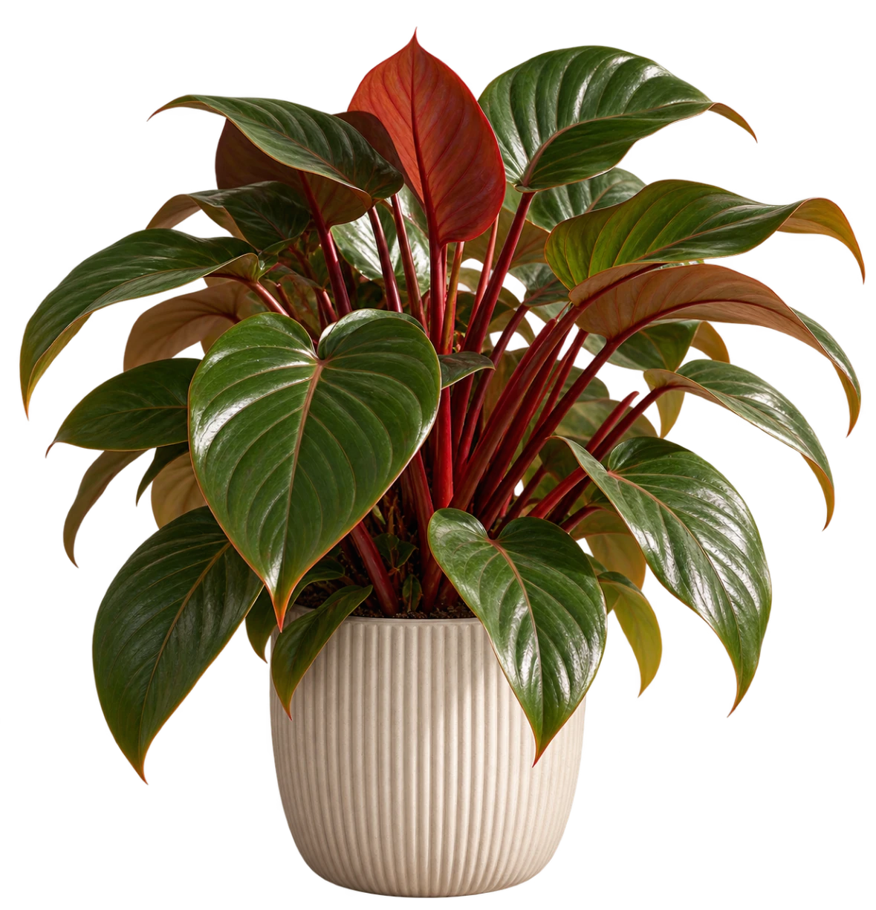

What is documented
Listed as “caution advised” by Cats Protection.
Cats Protection doesn't explain what this category means; it advises keeping caution-advised plants out of reach, especially if your cat is a nibbler. It doesn't describe effects.
What isn't known
For cats, we found no reliable information on:
- Classification
- Effects
- Severity
- Plant parts
- Exposure routes
{{petContextNote}}
About Red shield plant
A tropical perennial with heart-shaped foliage and reddish petioles.
Plant care
For growing the plant. Not about pet safety.
Sources & evidence
Toxicity evidence for cats.
The “caution advised” category isn't defined by the source. No cat-specific effects or exposure routes are documented in the sources checked.
The other sources consulted don't mention this plant (absence checked only in the pages retrieved).
Botanical & horticultural sources
Not toxicity evidence.
Your decision
Couldn't save. Your decision and reason are kept.
You can save this check as Considering, or leave it without saving.
{{confirmTitle}}
{{confirmBody}}
